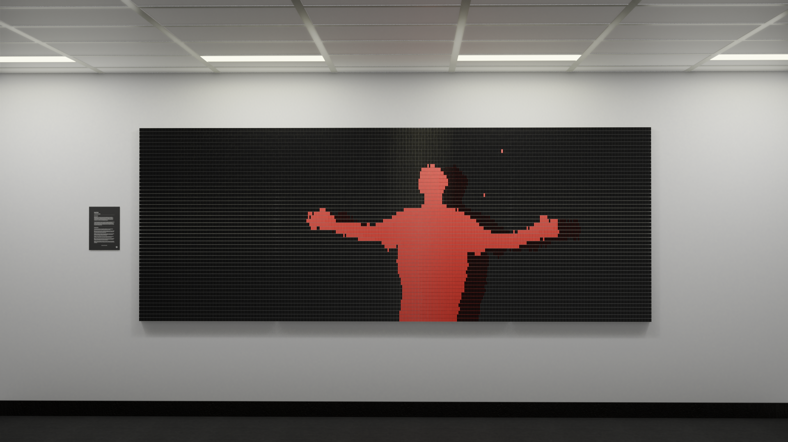
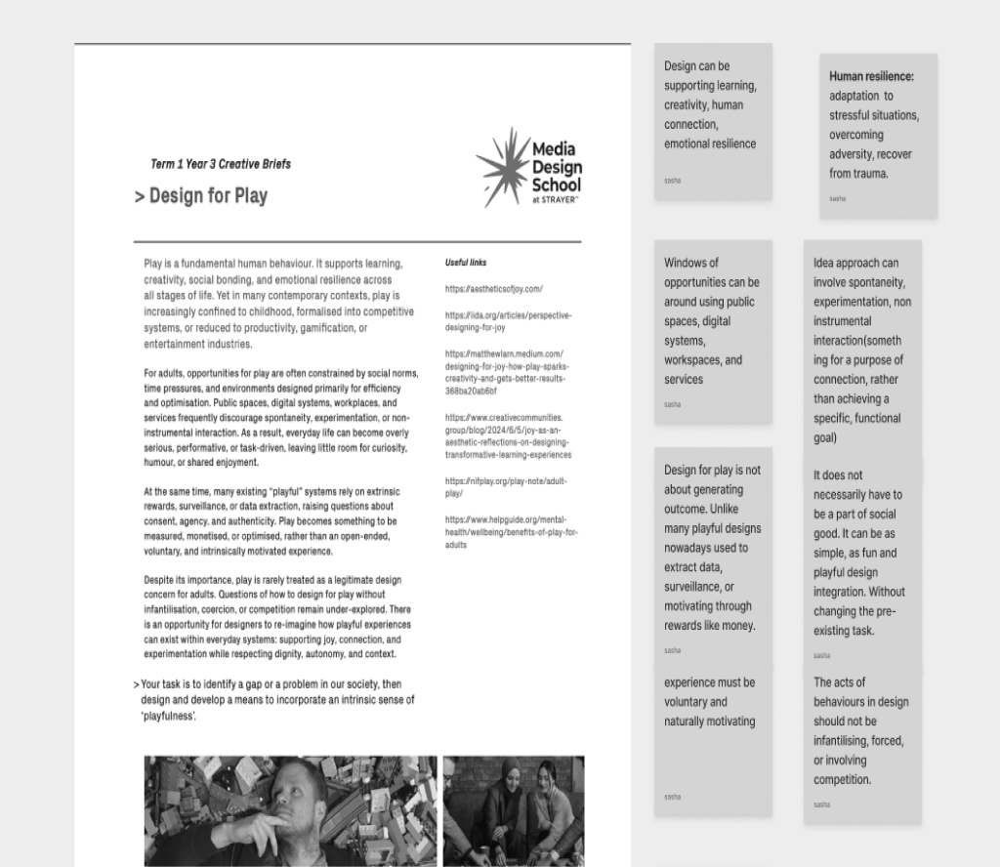
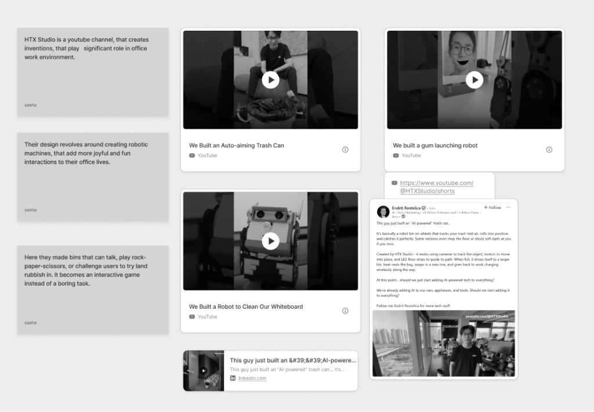
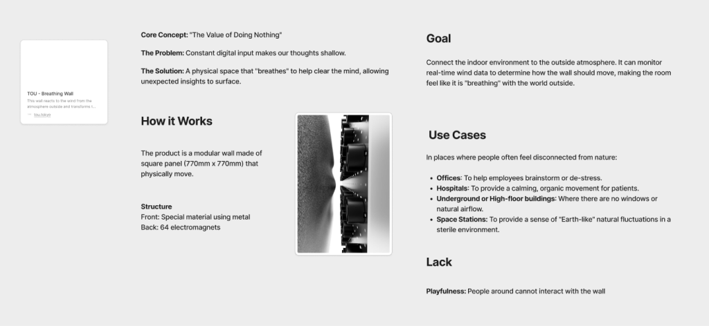
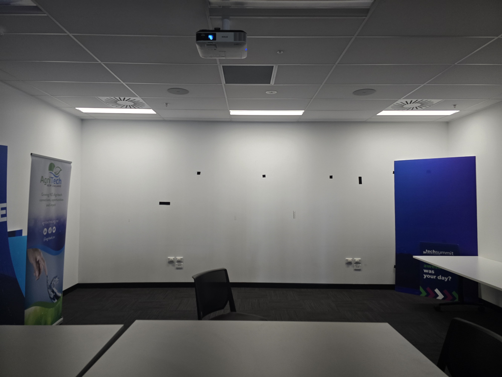
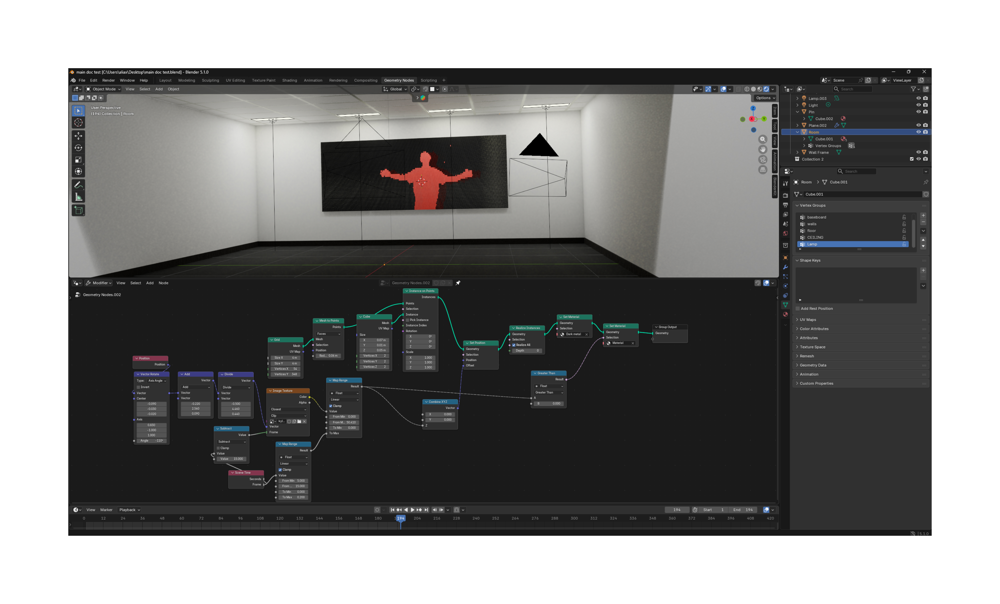
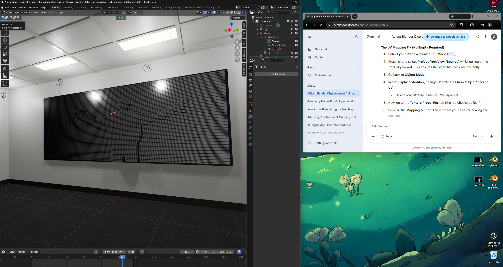

Project Echo
by Bella Hepburn*
Research Phase
Firstly we began unpacking the brief. Under the theme 'Design for Play,' our task was to cultivate an intrinsic sense of playfulness within a physical environment

My research focused directly on corporate office environments, analyzing how modern workplaces integrate playful design interventions into daily corporate routines to alleviate stress and foster collaboration.


Set-up space
We chose one of passive rooms of the building for our installation context. My task was to map out physical dimensions to then recreate the room in Blender as a 3D foundation for our concepts.

Work Process
Developing the manipulative framework required a deep dive into Blender's Geometry Nodes. By using Gemini to quickly research and map out specific node functions, I significantly sped up my technical execution and prototyping phase.


Final Result
Credit
A huge thank you to my team for great collaboration. Working alongside them gave me the perfect opportunity to push my boundaries into 3D software and interactive execution.
Technology
Timeline
8 weeks
Project Role
Team Lead
UX/UI